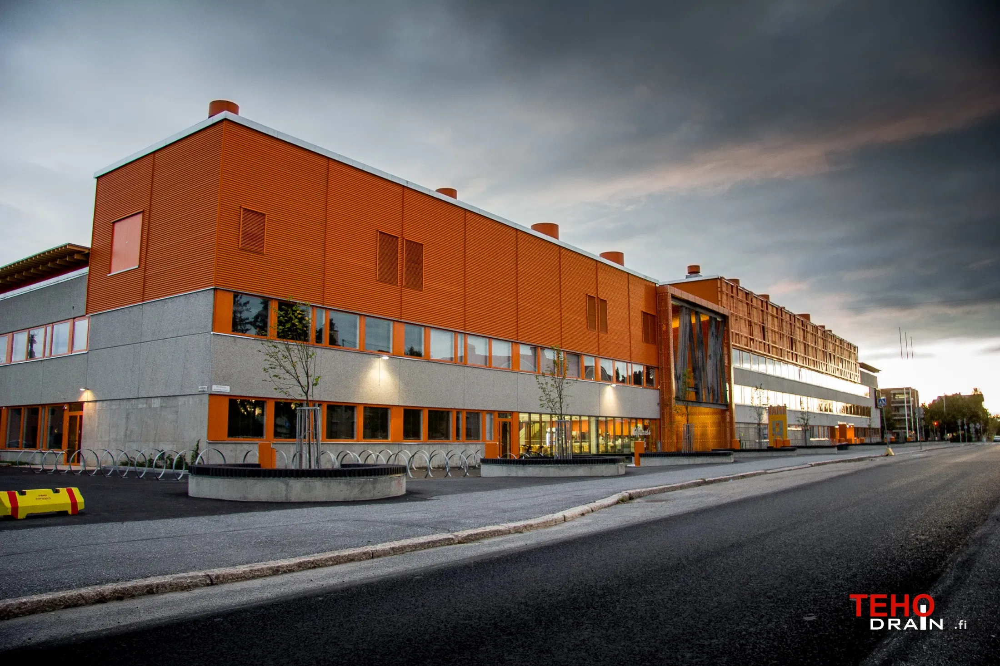

I went to an interview in Petrozavodsk where some teachers from this vocational school were arrived and got successfully through
the interview.
I went to an interview in Petrozavodsk where some teachers from this vocational school were arrived and got successfully through
the interview.
| career |
| From PTZ |
| my interview |
| residence permit |
| VAMK |
| diploma project |
| my work history |
| MSc |
| I've got a baby |
| My loved song ever |
| Feedback form |
So let's start from my moving to Finland in 2011. I have always wanted to move out of that fucking Russia. I didn't know any way to do that, so I just lived my life and dreamed about that stuff.
Once upon the time I had heard about the palce named Lappajärvi in Finland where finnish teachers take russian guys
to study in Lappajärvi vocational school. Here is that kinda place:
I went to an interview in Petrozavodsk where some teachers from this vocational school were arrived and got successfully through
the interview.
In the interview I was asked about:
Then after going successfully through the interview I applied to my first residence permit in Finland. By the law of Finland the first residence premit is approved only in your home country. Sure, there are much exceptions in that law, but I was waiting there. In order to apply for residence permit you have to show:
After graduating from vocational school I decided to move to Vaasa and proceed with my studies there. I applied to Vaasa University of Applied Sciences to machanical engineering department.
Here on the image at the left you can see the University (in finnish called VAMK) where I got my first BSc gradu. After pretty short 4 years I got my diploma and my career in Finland started to evolve in a better manner. There I got a friend from Russia by name Sashka and Martti. We drunk in all the bars in Vaasa and studied all the time. Onec we came to lections directly from a bur and in a quite drunk state. Our lecturer even take few steps away in order not to smell us :D
I did my diploma project with OpenCV library. The project was about getting a robot-manipulator see known shaped parts and getting it grab them.
I got 4 as mark for this project, but in my opinion it was quite challenging in coding with C++
At the same time I was working in a company Mapromec Oy. That was crappy place at all, but I had to stay there in order to graduate from VAMK. I worked there at first in quality inspector position, then CNC-machinist and then packaging stuff.
Now I am studying masters in Tampere University of technology in Robotics department focusing on Artificial Intelligence, Machine Learning and robotics. A the same time I am studying web-development and because of corona pandemia I think That my work place is gone, so I have to have some competences in some other field.
| Year | workplace | Study place |
|---|---|---|
| 2011 | Esa Jarvela | JAMI |
| 2012 | Kaarlo Finnila Oy | JAMI |
| 2012 | Kaarlo Finnila Oy | JAMI |
| 2013 | Mapromec Oy | JAMI |
| 2014 | Mapromec Oy | VAMK |
| 2018 | - | TUT |
And for now I am graduating from TUT as MSc robotics and AI engineer and got my baby born. She is only one month old and very small.
Now you can check on all the way favorite old song: